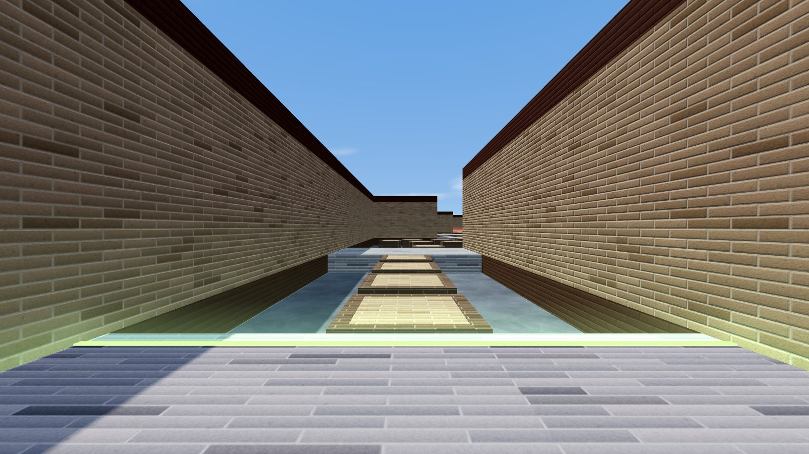

A little momentum.
A lot of practice.
Learn to bunnyhop in bhop_brick.
Link jumps across brick platforms, carry your speed, and reach the finish. Start with Autohop and focus on steering before trying Scroll mode.
Play bhop_brickDesktop · keyboard & mouse · click Play to capture your mouse; Esc releases it.

01 / Get moving
Choose Autohop, enter the game, and use W to build your initial speed. Hold Space to keep jumping automatically when you land.
02 / Steer in the air
Release W once you’re airborne. Hold A while smoothly turning your mouse left, then D while turning right. Match your movement to your mouse turns; small, controlled arcs work better than sudden flicks.
03 / Find your rhythm
Aim for the next platform and keep your jumps connected. Watch your speed and sync feedback as you practice. In Scroll mode, time each jump with Space or the mouse wheel instead of holding jump.
Controls at a glance
- W A S D + mouse
- Move and look
- Space / wheel
- Jump
- R / T
- Restart / last checkpoint
- C / Shift
- Duck / walk
- F / H
- Inspect knife / switch hand
- Esc
- Release mouse and open menu
Chase your best time
Finish a run to record a time. Set an available name in the leaderboard to post your personal best, compare Autohop and Scroll rankings, and watch the top replays to learn their routes.